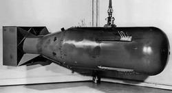

Un cañón antitanque es un tipo de pieza de artillería desarrollada específicamente para destruir tanques. Actualmente obsoletas, estas armas fueron una de las principales defensas contra los blindados durante el período de entreguerras y la Segunda Guerra Mundial. Fue durante la Segunda Guerra Mundial que los cañones antitanque evolucionaron de manera más significativa. Con la mejora constante y rápida de los blindajes, los cañones antitanque tuvieron que adaptarse aumentando su calibre y potencia. Con un total de 3 generaciones de cañones, siempre crecientes, los modelos finales fueron muy pesados. Al mismo tiempo, aparecieron alternativas más ligeras y efectivas como el cañón sin retroceso o el misil antitanque, que acabarían sustituyéndolos.
Hubieron muchos modelos de antitanque:
Se destacan algunos como el cañon antitanque Hotchkiss de 25 mm, un cañón antitanque francés que fue empleado principalmente en los primeros años de la Segunda Guerra Mundial.
Historia y desarrollo.
A inicios de la década de 1920, el Ejército francés se dio cuenta que la capacidad antiblindaje del cañón de infantería TRP 37 mm sería insuficiente contra los tanques modernos. En 1926, la empresa Hotchkiss et Cie propuso un diseño propio de 25 mm que eventualmente fue aceptado en servicio bajo la denominación canon de 25 mm semi-automatique modèle 1934 (generalmente acortado a canon de 25). Al inicio de la Segunda Guerra Mundial, era la principal arma antitanque de la Infantería francesa. Hacia mayo de 1940, se reportó que habían 6.000 cañones Hotchkiss 25 mm en servicio con el Ejército francés, a pesar que algunas unidades todavía estaban esperando que les fuese suministrado.
Al ser empleado durante la Batalla de Francia en 1940, se descubrió que su proyectil era demasiado pequeño para ser eficaz contra los tanques alemanes, especialmente a largo alcance. Continuó siendo un arma útil contra automóviles blindados y otros vehículos con blindaje ligero.
Empleo en el extranjero
En 1935, el Ejército de los Estados Unidos compró el cañón antitanque Hotchkiss 25 mm para evaluarlo.4 Turquía compró 400 cañones durante el período de entreguerras.

|
|

|

|

|

|

|